Overview
Thumback is a platform that helps users to search and hire professionals to take care of your home.
Role
I ensure brand consistency across all touchpoints and elevate the brand with thoughtful visuals.
Stand off campaign
My role ranged from early ideation, concept development to the creation of visual graphics. I worked closely with the team to make sure the TV spots struck the balance between relatable and cinematic to dramatize that familiar feeling of being stuck in a stand-off with your unfinished project. The message is: you don’t have to be stuck—Thumbtack can help you make the move.
OOH
I led and created design for out-of-home ads (this is the first OOH after Thumbtack rebranded from orange to blue). The creative assets included: print and digital bulletins, bus kings, one-sheet posters and digital panels. Focused on localized markets in San Francisco and Seattle, the ads are distributed across 41 placements targeted to leverage 5.0 billion daily location observations. These ads aim to boost brand visibility and engagement, with targeted approach that resonates with local audiences.
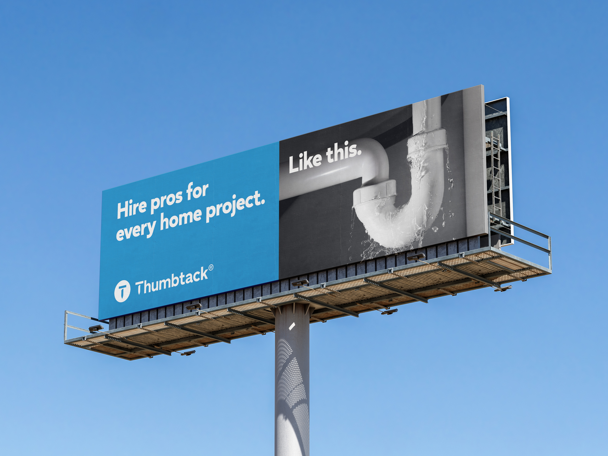
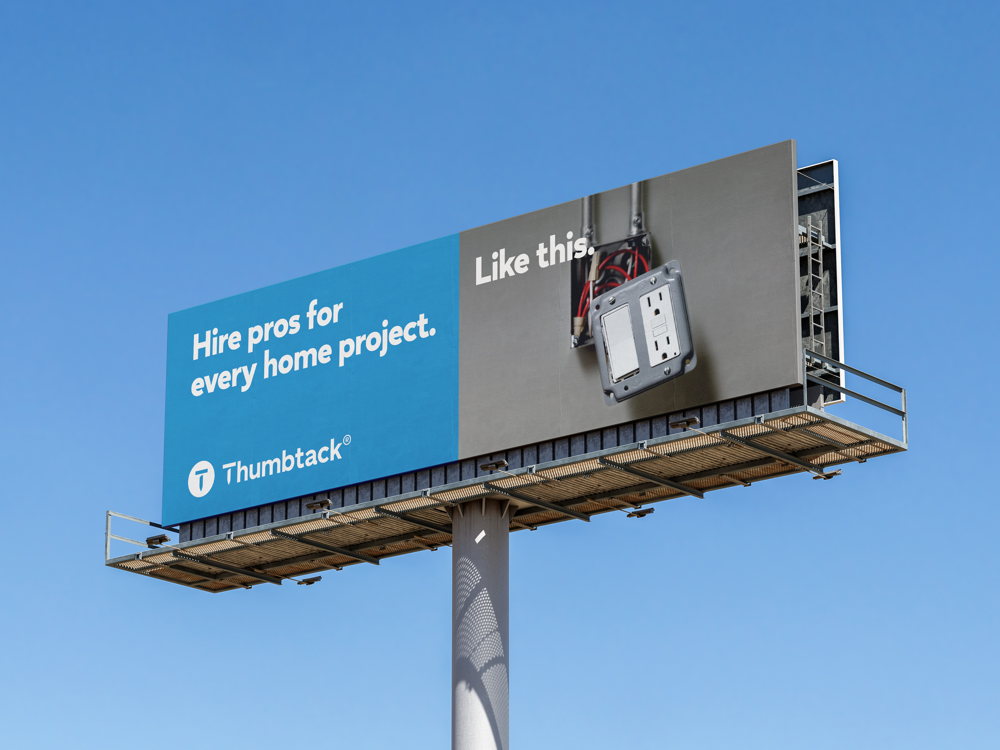
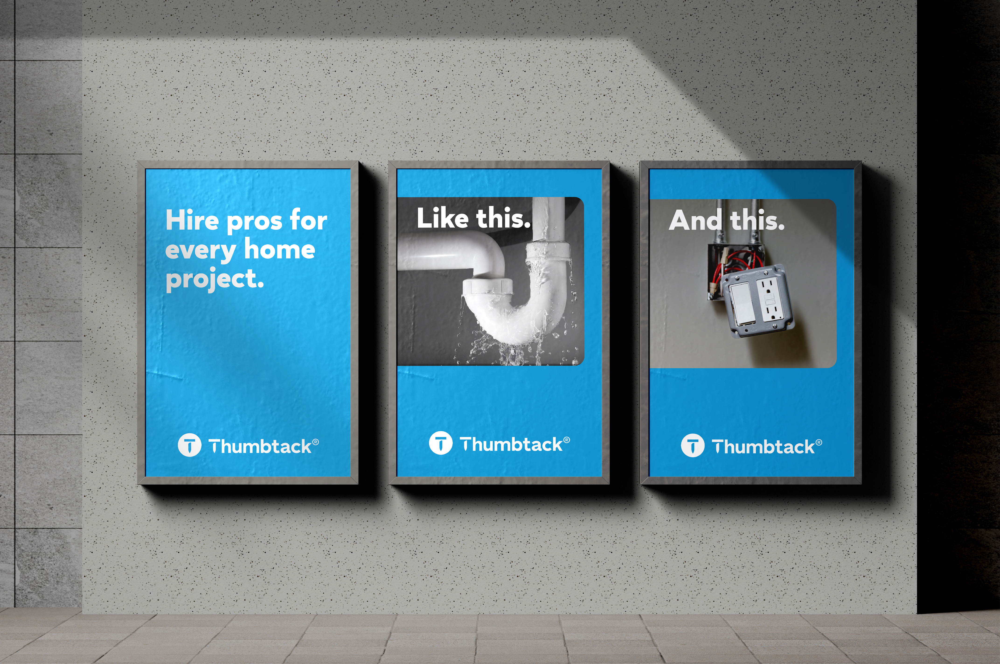
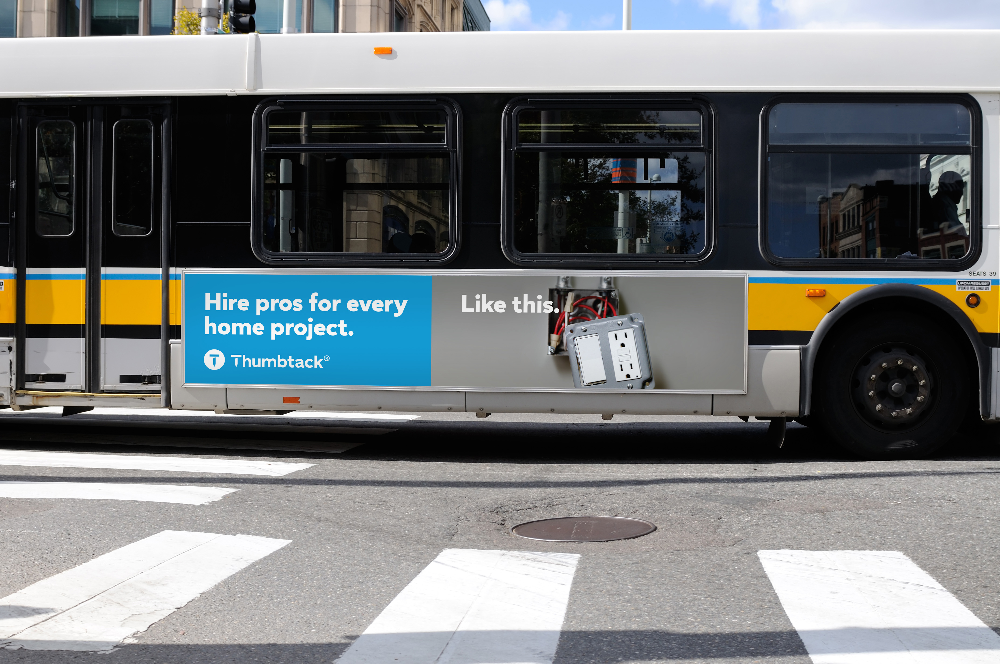
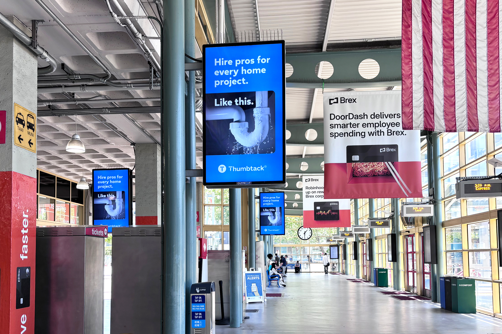
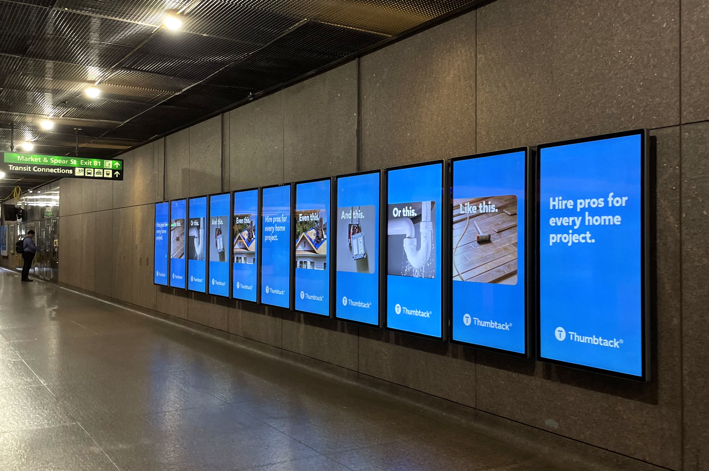
Frontdoor Refresh
I collaborated with the product team to enhance the customer experience on frontdoor page, a key destination page, for users entering the site with a specific service in mind. I led the header redesign, incorporating elements from the brand refresh to create a more cohesive and engaging experience.
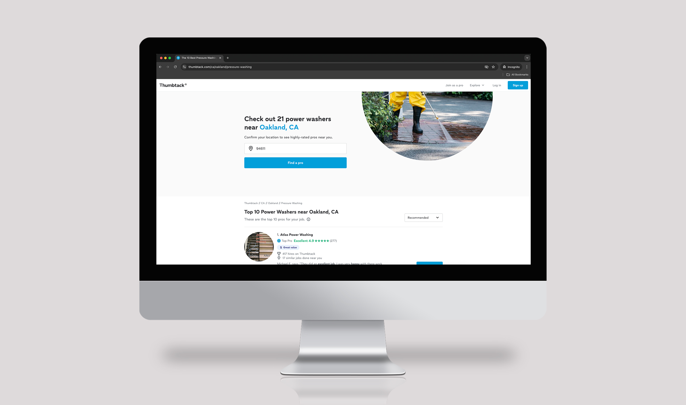
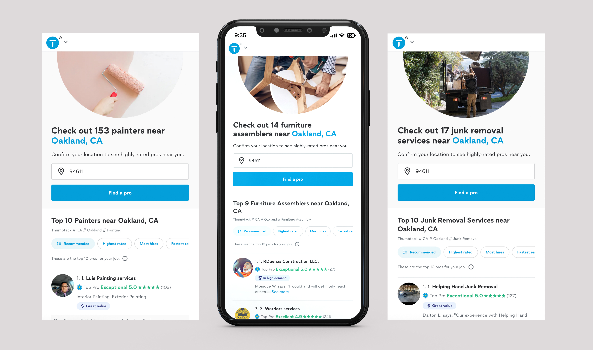
Print collaterals


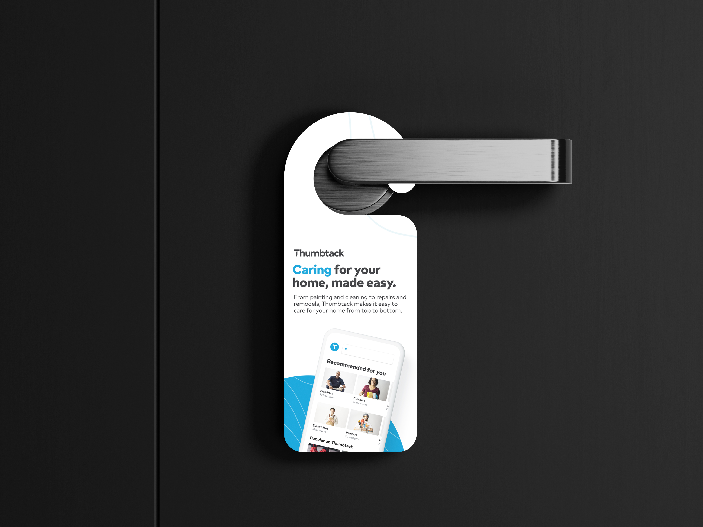
Brand Expression
One of the shifts from the brand expression involved moving away from bold font weights to convey a softer, less aggressive brand's tone. Instead of relying solely on bold, I explored style variations to establish visual hierarchy within the layout.
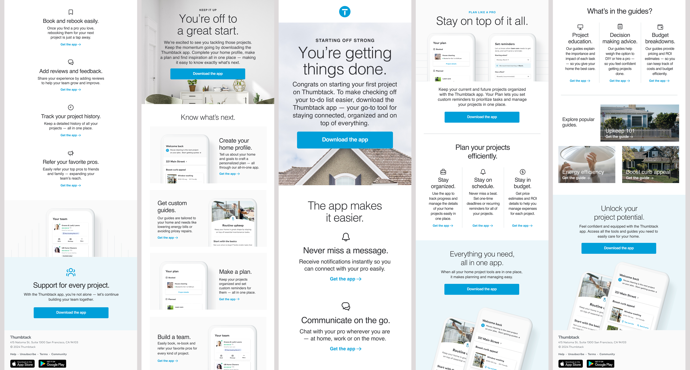
Integrated Marketing
I worked closely with the integrated marketing team to create cohesive content that engaged our target audience and drove leads. By leveraging parternships with Walmart, I created assets that helped to reach new customer segments. My design work included ads, emails, landing pages, blogs, and seasonal campaigns. Throughout, I took a creative approach while balancing specific stakeholder requests.
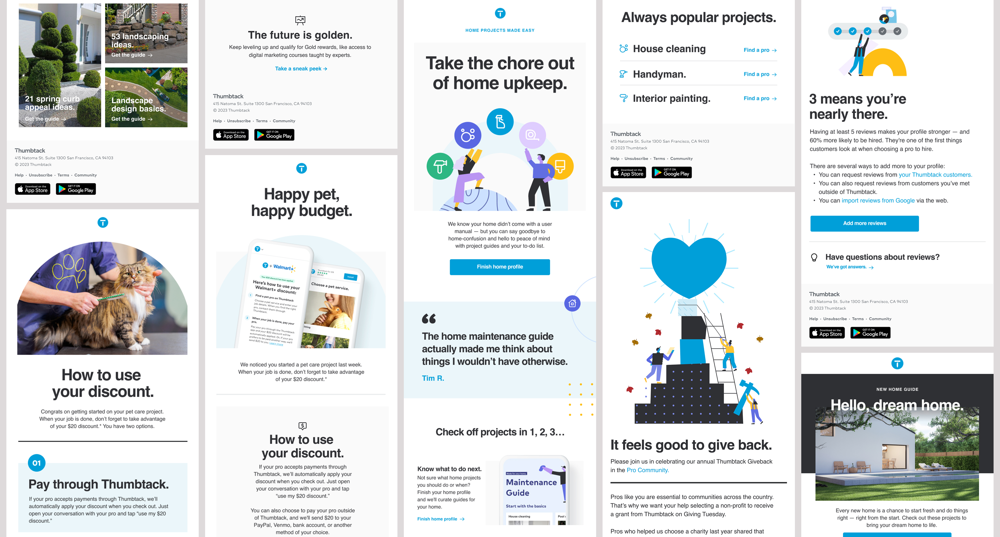
Spring campaign
For Spring campaign, I used the seasonal shift as a relatable moment to motivate people to tackle home projects, while being empathetic that shaking off winter can feel like coming out of hibernation. I leaned into humorous and sometimes absurd scenarios of animals coming out of hibernation, keeping the tone light and non-judgmental because we've all felt overwhelmed by our to-do list at times.
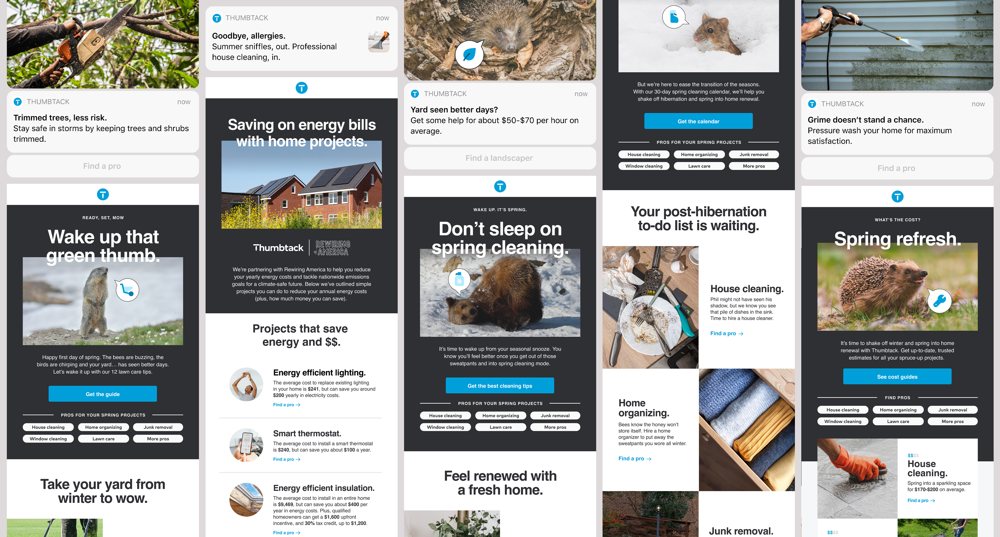
Social Campaign